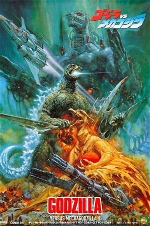

Godzilla Vs. Mechagodzilla II (1993)
ActionAdventureScience Fiction
| Year | 1993 |
|---|---|
| Rating | US:PG / US:Rated PG |
| Genre | Action, Adventure, Science Fiction |
The U.N.G.C.C. (United Nations Godzilla Countermeasure Center) recovers the remains of Mecha-King Ghidorah and construct Mechagodzilla as a countermeasure against Godzilla. Meanwhile, a giant egg is discovered along with a new monster called Rodan. The egg is soon found to be none other than an infant Godzillasaurus.